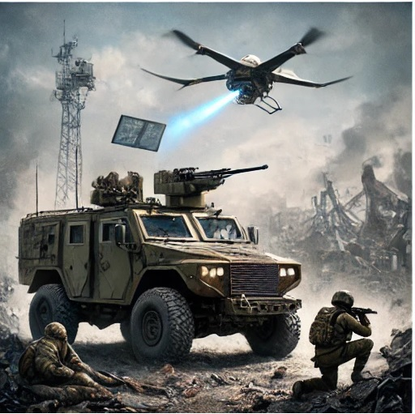
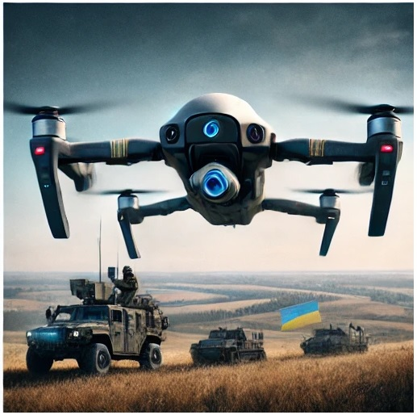

Russio-Ukraine War: The Future of AI, Robotic in Modern Warfare
21 August 2024 |
Pearl Ramson

As Russia-Ukraine war rages on, the conflict has begun to take new dimension. From cyberattacks to drone strikes, the reported deployment of UGVs, or Unmanned Ground Vehicles, represents another emerging trend in the two and half year’s faceoff.
In December 2023, Ukraine's Ministry of Defense reportedly destroyed a Russian UGV in the Avdiivka industrial area. This confirmed development indicates the deployment of AI-driven robotic systems on the battlefield.
This incident represents the first major instances in modern warfare where hostilities have included robotic warfare. The point of concern, however, is the potential impact AI and robotics pose on the future of modern warfare.
Potential Capabilities of Robotics in Modern Warfare
The technological capabilities of AI and robotic machinery are advancing so rapidly that modern militaries are considering them invaluable assets.
According to many reputable sources, these machines can be equipped with a wide array of devices such as LIDAR sensors, cameras, and thermal imaging tools that enable them to perform dangerous reconnaissance and surveillance missions, or breaching operations, with high precision.
Their AI-driven autonomy allows them to navigate difficult terrains, identify objects of interest, and even make decisions based on real-time data, complementing human soldiers and reducing frontline risk.
They can also be outfitted with payloads for logistics, such as carrying supplies to troops in remote or hazardous locations, as seen in the Russian military’s use of UGVs.
Some prototypes are even designed to carry small arms or explosives, making them potential assets in combat scenarios.
A RAND report also highlights the “increasing use of robotic surgery on the battlefield”, marking an advancement in the development and deployment of robotic technology in combat zones.
Undoubtedly, these machines are highly adaptable. Their modular design allows for customization according to specific missions, which could make them, over time, an indispensable asset for militaries globally.
The Down Side
Despite their potential, AI-driven robotic systems are not without serious challenges.
According to a Foreign Policy publication, these systems have several technical limitations.
Short battery life, vulnerability to sensor damage from attacks, and zero mobility in extremely rough terrains are some issues that can restrict their effectiveness.
Chinese state-owned CCTV reports that the battery life of China’s recent quadruped model, for example, reportedly lasts less than four hours.
There are also significant ethical concerns causing worry for Pentagon and the Congress, as reported by The New York Times.
The idea of machines making life-and-death decisions without human intervention raises several moral questions that have yet to be fully addressed by international law.
International humanitarian law places civilian protection at the forefront. The question remains whether these machines are capable of adhering to these laws in warzones.
Until these questions can be answered with certainty, the development and deployment of AI-driven robots require careful management to avoid unintended consequences.
Adoption
Beyond the confirmed use of robotics by both Ukraine and Russia, China and the United States appear to be forerunners in this technology's adoption.
Chinese CCTV recently reported that China “showed off armed robotic quadrupeds during recent military drills with Cambodia.”
A Chinese military spokesman, Chen Wei, during the joint military operation, explained that these robots can perform several tasks autonomously and suggested that, in the future, they can “serve as a new member in our urban combat operations.”
The United States is also preparing to incorporate robotics and other smart machinery into its military operations. Retired Army General Mark Milley, former Chairman of the Joint Chiefs of Staff, predicted at an Axios event that “robots and other smart machinery will comprise up to one-third of the U.S. military in the next 10-15 years.”
This development indicates AI-driven robotics may soon become commonplace in global militaries for both offensive and defensive operations. It is now a question of when, and not if. And we can expect that robots in combat scenario will no longer be confined to science fiction anymore.
Bottom Line
AI-driven robots have already made their way into the Russia-Ukraine frontline. China recently unveiled a quadruped model in military drills, while the United States plans to make robots and other smart machinery one-third of its military within the next 10 to 15 years.
These developments suggest modern militaries may be heading for robotic adoption for combats in the nearest future. While this shift may represents a leap in technological advancement, the greatest concern is the risk these technologies pose to civilian protection.
Until there is a clear guideline regarding their use, the global community must tread carefully to mitigate the risks they portend.